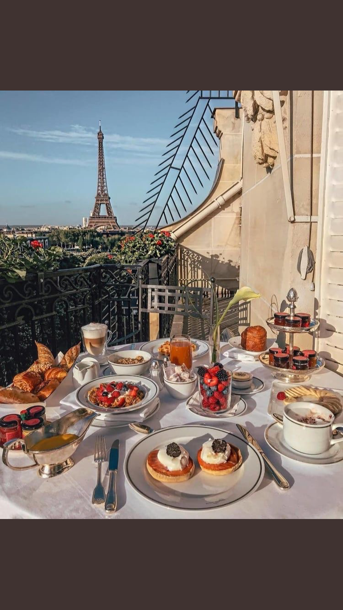
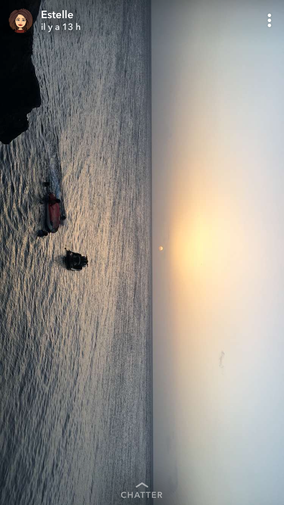

Pour ma part je ne dirais pas grands chose sur moi, c'est ton jour, ton Anniversaire donc c'est normal que tu sois mise en avant ^^ .
J'ai pas mal du regarder tes images pour savoir ce que je choisirais ou pas, devoir choisir entre insta ou twitter
Comme tu le sais comme on doit éviter les choses 🔞.
Mes textes le sont en générale et je ne m'en cache
pas, je m'excuse si je suis cru, intrusif ou encore génant mais je me dois d'être sincère.
-
J'ai eu beau voir certains images, poste, twit et retwit j'ai toujours eu du mal à te voir,
pourtant ce n'est pas le contenu qui manquait.
-
J'aimerai te voir, sans tes artifices, sans ton masque , sans ton rôle.
J'aimerai te voir, toi, vulnérable, humaine me parlant de tes projets et de tes envies sans hontes.
J'aimerai te voir le visage souriant, sans que tu fasses semblant.
J'aimerai te voir heureuse et bien entouré, façonnant ce monde pour le rendre meilleurs.
-
J'aimerai poser ma mains sur ces marques
qui t'on marqué, blessé, brisé et humilié. J'aimerai que tu n'es pas peur de te donner et d'aimer peut importe les risques
J'aimerai que quelqu'un puisse t'apporter ce qui te manque ou que tu trouves ce qui te manque pour vivre la vie que t'aimerais avoir.
-
Nous évitions certains mots pour éviter nos maux de coeur.
Nous avions abimer nos corps pour apaiser nos coeurs.
Nous nous sommes auto-détruit pour rebatir notre rélation.
Nous n'avons j'avais perdu fois l'un en l'autre, malgrés les dire de notre relation
Nous avons respecter nos voeux et nous aimons encore de mille feux.
-
Some days
I am afraid to write,
because sometimes
honesty kills me.






Histoire
Je ne suis pas fort pour dire les choses, mais je pense que je ne suis pas mal pour les faire ressentir.
Si les temps étaient différents, je pense que je t'aurais emmené chez moi, sur mon île.
Profiter du soleil, mettre tes pieds
dans l'eau cristaline, manger des acras de morue, sorbet au coco.
Profiter des différentes plages aux sables noire, fin ou pavé de coquillage.
Peut être que je me poserais sur ton fiak pour te lire une histoire ou encore juste pour
me reposé,
ou encore te poser de la crème de bronzage pour que t'évite de finir aussi rouge qu'une écrevisse.
À l'approche du coucher de soleil, on mangera un plat que j'aurais moi même cuisiner pour nous, accompagner d'un bon whiskey ou d'un
champagne, le choix te serra offert.
On y restera jusqu'à la nuit tombé pour profiter du paysage et aussi du bruit des vagues qui viennent caresser nos pieds.
On rentrera surement pété à la maison en souriant, étant heureux de notre
journée et moi de t'avoir fait découvrir qui je suis.
Le lendemain tu te réveillera avec un petit mot sur un papier et un déjeuner prêt.
Au menu, un milkshake à la banane une salade de fruits avec quelques vienoisseries.
Sur le papier un mot disant: Joyeux Anniversaire, rendez vous l'an prochain.